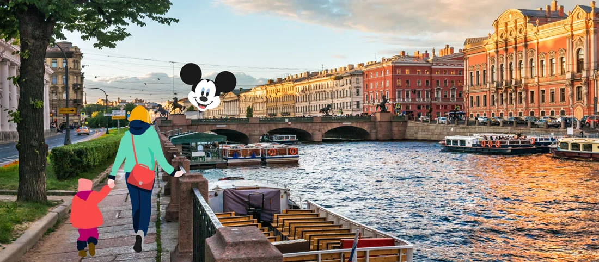
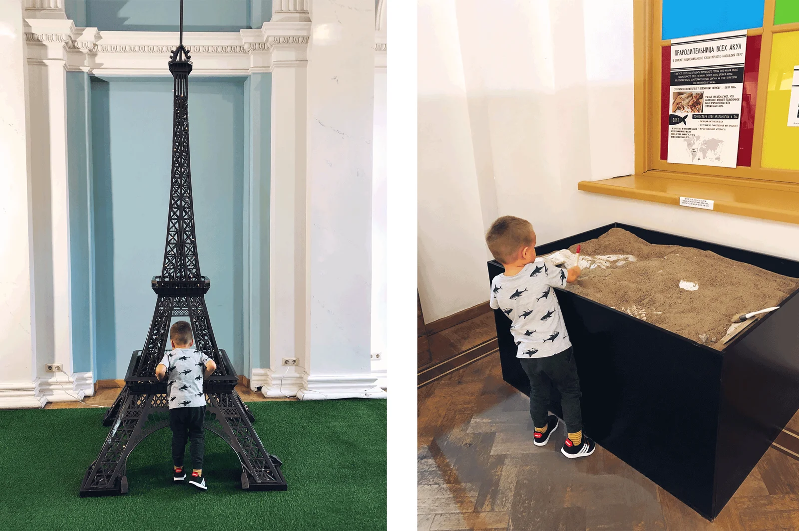
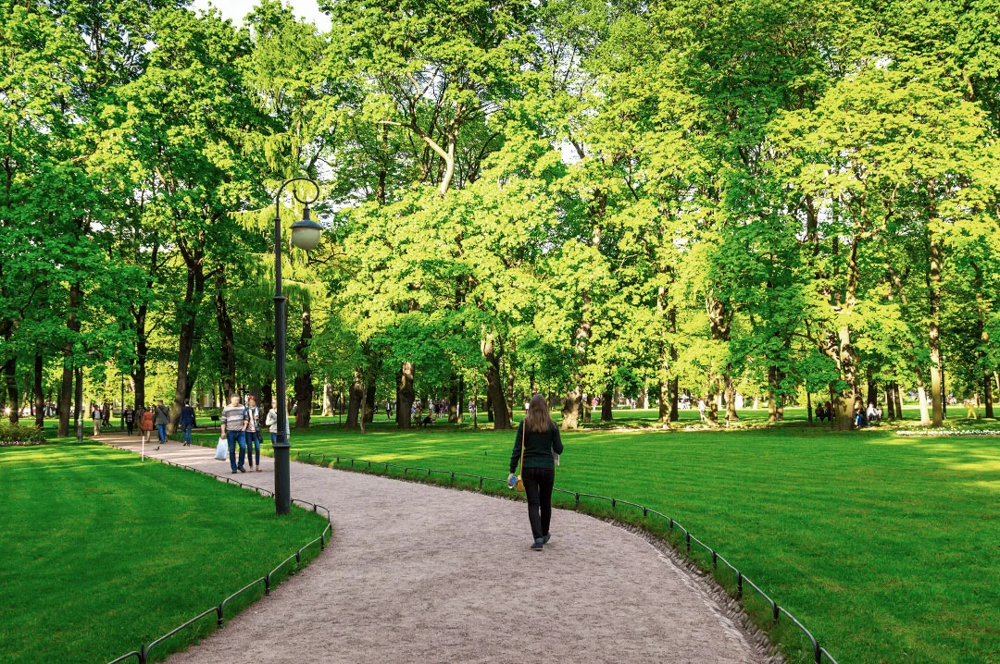
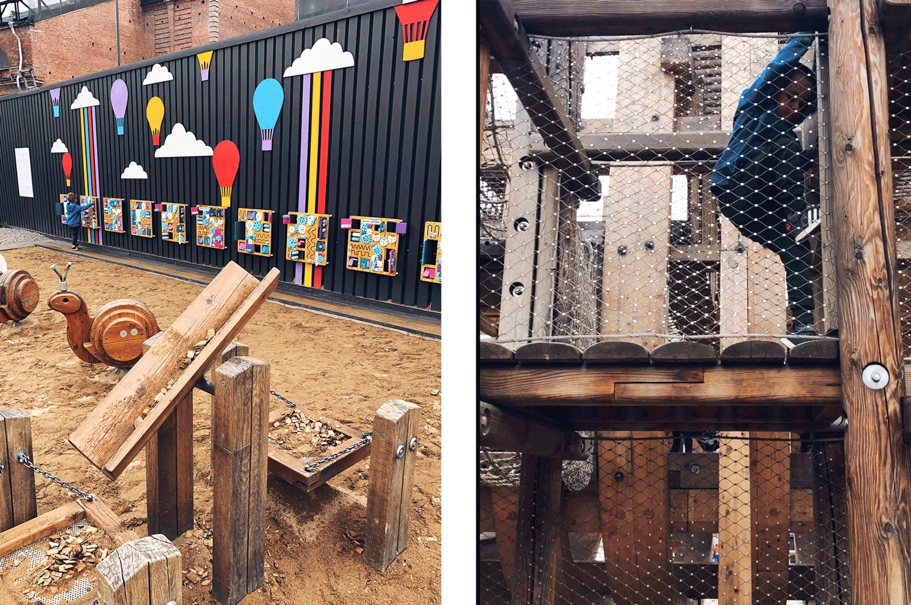
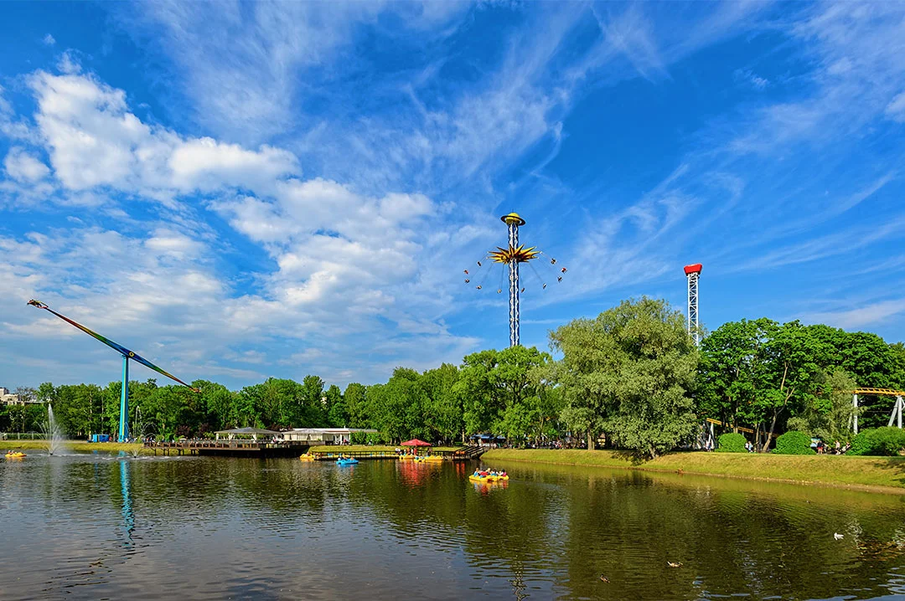

Неделя в Санкт-Петербурге: куда сходить с детьми
Автор: Света Савина
Варианты семейной культурной программы на несколько дней. Материал помогает распределить детские активности по поездке и сочетать разные виды городского досуга.
Читать полную статью на блоге Островка →



Фото: Света СавинаИсточник изображения




Фото: Света СавинаИсточник изображения

